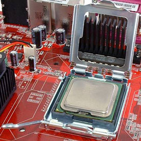

Building The Computer
Many technicians refer to the CPU, motherboard, DRAM and graphics as a platform. These parts can be assembled and tested outside of a case by connecting a power supply and power button. And, except for a discrete (separate) graphics card, they can usually be inserted as an assembly into an empty enclosure.
Haven't picked out your hardware yet? Click the link below to read how to pick out you're hardware
- Index
- Step One: Installing the Processor
- Step Two: Installing the Cooler
- Step Three: Installing RAM
- Step Four: Installing The Motherboard into the case
- Step Five: Installing Graphics Cards and other PCIe cards
- Step Six: Storage Installation
- Step Seven: Connecting it all together
- Final Words
^ Step One: Installing the Processor
-


AMD Processor In Socket.
Socketed processors have followed a common theme for at least 20 years: an arrow on one corner of the CPU aligns to another arrow on the CPU socket. This is the first method manufacturers use to assure proper orientation, but AMD also uses missing pins with blocked interface holes to further prevent improper installation.
CPU pins are easy to bend, so if you're really rushing through the motions, it's certainly possible to force a processor into its socket the wrong way, smashing its pins in the process. With the tension lever released as shown, the CPU should literally drop into the socket under its own weight, with no force applied. These are known as Zero Insertion Force (ZIF) sockets.
After checking to make sure the CPU is fully inserted, press the tension lever into the horizontal position to lock it in place.
LGA processors have edge notches to prevent incorrect installation in addition to being marked with an arrow as a visual guide. A load plate holds the pinless CPU tight against socketed contacts, called lands. One or two locking levers apply the load.
After making sure that the CPU is correctly installed (as shown above), lower the steel load plate over the CPU and rotate the wire clamp into its locked position.
^ Step Two: Installing the Cooler
-
Thermal Compound and Thermal Spread on chip.
Thermal interface material (also known as thermal compound, paste, or grease) fills tiny spaces between the CPU and its cooler to assure optimal heat transfer. Most factory-supplied coolers have a stiff factory-applied TIM that becomes soft when heated by the CPU, but other coolers require the manual application of thermal transfer grease or paste.
Igor Wallossek’s article on thermal paste installation shows a perfectly acceptable way to add today’s thick thermal materials without creating a mess. A small blob in the center of the sink will indeed spread as shown in the above photos, and thermal softening will likely spread it even more as the system is used. But I like to maximize contact surface area all the way to the corners, so I usually put a slight smear of paste around ¼” from each corner in addition to the small blob in the middle.
Excess paste will squirt out around the edges of the CPU, so it's important not to apply so much as to create a mess. Cleaning pastes out of crevices can be particularly difficult, and becomes necessary when using certain metallic thermal solutions.
-
Intel Cooler Installation (Pictured Top) &
AMD Cooler Installation (Pictured Bottom).
Clip-on CPU coolers are still used by AMD for its Socket AM3+ and FM2+ processors, and the clip is still compatible with most of the firm’s older socket interfaces. With the cooler in position, slip the non-levered end over the corresponding plastic hook, then repeat the process on the levered end. Finish the installation by flipping the lever to apply pressure.
Pinned-on CPU coolers use mounting holes rather than the more traditional clip bracket. Introduced with Intel’s LGA 775 package and retained through the company's modern LGA 1150 interface, installation requires pushing each pin into the corresponding motherboard hole until a click is felt or heard.
The lower pin (translucent white, above) is hollow, split on one end, and has barbs on the split end. This part goes through the mounting hole first. The upper pin (black, above) protrudes through a hole in the lower pin’s center to wedge the barbs apart. Twisting the top of the pin ninety-degrees counterclockwise unlocks the spring pressure, allowing the cooler to be removed.
Because a counterclockwise twist defeats the latching mechanism, check that all pins are properly twisted fully-clockwise before attaching the cooler.
-
Zalman Cooler and Backplate.
Screw-on coolers solve the problem of fragile plastic pins and the four points of motherboard strain by using screws and a load-spreading support plate. This greater security and motherboard protection is particularly useful with large and heavy coolers that require increased contact pressure across the CPU’s heat spreader. The support plates are typically designed to fit Intel's four-pin mounting holes, or replace AMD's clip-style brackets. Intel’s LGA 2011 motherboards ship with a support plate already installed, and many coolers also ship with a second set of mounting screws to use its threaded holes.
Because the support plate must be placed behind the motherboard, these coolers should be mounted before the motherboard is installed into the chassis. Many cases have an access hole in their motherboard trays specifically for this purpose, but it’s usually easier to reach the screws with the motherboard unobstructed by case walls.
^ Step Three: Installing RAM
-
Installing Corsair RAM.
System memory is keyed so that it only fits into the slot one way. Because this key is off-center, backwards modules cannot be fully inserted. Check to make sure that the notch in the module's contact area aligns with the slot's key, and press each module into the slot until a click is heard or felt from the latches. Fully seating modules may require a relatively significant amount of pressure.
Our configuration called for a pair of modules in corresponding slots to enable dual-channel mode. Check your motherboard manual to see which slots should be used for this performance-enhancing orientation.
Also note the slot numbers, which are usually written on the board, and compare them to the module installation order outlined in the motherboard manual. This was particularly critical with LGA 1156- and LGA 1366-based motherboards because they relied on a DIMM in the second slot of each channel for termination, though many LGA 1150 and 2011 motherboards aren’t as fussy.
^ Step Four: Installing The Motherboard into the case
-
Motherboard Stand Offs and Mounting Points.
Most enclosures support a range of motherboard sizes, each with a few different mounting points. These points connect a layer of the motherboard called the ground plane to the case's mounting tray, reducing signal crosstalk due to radio frequency interference (RFI). Thus, the mounting points are usually grounded.
Misaligned mounting points could contact a hot trace on the motherboard's back side, so case manufacturers usually make them removable via metal spacers called standoffs. It's important to observe the exact location of each mounting hole in the motherboard before placing a standoff in the corresponding tray location. A mistake made here could potentially damage the board, though the most likely result of an improperly-placed standoff is a system that simply refuses to power on. Arrows in the photo below illustrate the matching mounting points where standoffs were placed.
The ATX form factors specifies the size and location of a rectangular plate, called an I/O shield, which fills the gaps around the ports and connectors on the back of the motherboard. That is to say, an I/O shield fits a customized port selection to a standardized hole in the chassis. Cases often include an old-fashioned standard plate that must be snapped out before inserting the new, custom replacement.
-
Motherboard Port Cover Installation.
Note that the upper tabs of this I/O shield hang down because it arrived in a semi-flattened state. These need to be bent approximately ninety-degrees from the surface to prevent them from blocking nearby ports during motherboard installation. The left tab in the photo below has been bent to the proper orientation. Many of today’s most popular boards instead use foil-faced foam to contact the ports.
Recheck standoff positions before inserting the motherboard at a slight angle, aligning ports with cover plate holes while guiding the board until it rests flat against the standoffs. Grounding tabs or foil-faced foam on the I/O shield will typically push the motherboard out of position, but the board should be easy to push into place. Align one hole perfectly with the standoff and affix a screw, then push the board into alignment for a second hole before tightening the second screw. The first two screws should prevent the board from twisting out of position while installing the remaining screws.
The power supply is usually secured with four coarsely-threaded screws, though it’s not always mounted to the back of the case. Some enclosures relocate the power supply and use an extension cable to place power on the back. Variations in design may demand that the power supply is installed before the motherboard, as specified in the case’s manual or installation guide.
^ Step Five: Installing Graphics Cards and other PCIe cards
-
PCIe x1 (Top), PCIe x16 (Middle), and PCI slot (Bottom).
Expansion cards are usually available as PCI Express (PCIe), since legacy PCI is nearly extinct. Available in single-, four-, eight-, and sixteen-lane versions, the PCIe standard retains compatibility between shorter cards and longer slots. The image to the left shows a PCIe x1, PCIe x16, and PCI slot for comparison.
PCIe allows shorter cards to be placed in longer slots, such as an x1 card in an x16 slot. Conversely, longer cards can only be placed into shorter slots when the forward end of that slot has no cap. Because the difference between open-ended and closed slots isn’t easily seen in photos or explained on motherboard specification sheets, many manufacturers use x16 slot connectors for their four- and eight-lane interfaces. If you noticed that half of the electrical contacts are missing from the above PCIe x16 slot (the little metal pieces are tough to see), it’s because that slot is wired as an x8 interface.
Though our example motherboard includes on-board graphics, we chose to use a PCI Express graphics card for enhanced performance. The PCIe x16 card is inserted until a latch on the slot engages the card's hook. These latches are present on most PCI Express x16 slots, but are not found on lower-bandwidth PCI and PCI Express x1 interfaces.
As with other cards, a case screw or quick-release latch secures the top of the card's metal bracket at the opposite end.
^ Step Six: Storage Installation
-
3.5 inch Hard Drive Installed in case.
Internal 3.5" drives are traditionally secured with coarse threaded (UNC) case screws, while external drives, 2.5" drives and bay devices usually have fine metric threads. External drives typically slide in from the front, while internal drives often slide in from inside the case.
Several manufacturers offer tool-free installation using drive rails, sliding latches, or other pin-loaded devices that engage with screw holes. Our case reviews highlight several designs.
^ Step Seven: Connecting it all together
Connecting Power Supply and Front Panel Conections
-
24 Pin (Top) and 4 Pin (Bottom) PSU Connector.
The motherboard cables of new systems are usually based on the expanded EPS12V standard, which encompasses previous ATX standards. Previously found on server-sized EPS power supplies, the 24-pin main power cable is both forwards and backwards compatible with the earlier 20-pin part. The below example shows how a 20-pin plug fits into a 24-pin socket; the wide latch is designed to work with either 20-pin or 24-pin plugs.
One of the reasons for a 24-pin power cable includes added amperage supplied to PCI Express slots compared to older interface standards. While most cards won't overdraw a 20-pin connector, graphics card makers occasionally have suggestions for a higher minimum level of available power.
The 4-pin or 8-pin ATX 12V connector satisfies the electrical demands of the CPU. Formerly known as the "P4" power connector, it was added by Intel to supplement its Pentium 4 processors, and later adapted by AMD motherboard designers. The newer 8-pin versions were originally meant to address phenomenally power-hungry Pentium D and Prescott-based Pentium 4s, but many modern AMD and Intel processors are efficient enough to once again work from 4 pins. Most 8-pin boards will work with both 8-pin and 4-pin power, as the connectors are cross-compatible.
-
Front Panel Connectors.
Also seen in the photo above is a 4-pin CPU fan power connector and the front-panel audio connector. On-board 4-pin fan connectors are designed to provide pulse width modulation (PWM) automatic speed control, but the connectors are once again cross-compatible with 3-pin fans. Some motherboards are able to control fan speed via either voltage changes or pulse width, while others will run the “wrong” fan at full speed, continuously, without harming the system.
Front panel audio cables are often available with both AC97 and HD-Audio connectors, where HD-Audio is a slightly newer standards and AC97 is extinct. Using the "wrong" connector may temporarily reduce the number of available audio channels, but will not harm any components. The key-pin for audio headers is in a different location from other panel connectors to ease installation.
The case's power switch, power indicator light, reset switch, and hard drive activity light are usually connected at the motherboard's lower-front corner. LEDs pass current in only one direction, and positive pins (indicated by a "plus" sign below) normally connect to the colored wire on each lead. A black or white lead wire usually indicates negative or ground state. If your power and reset switches work but your power and HDD lights don't, your LED connectors are probably flipped.
USB connectors have been standardized for over fifteen years, and we suggest that first-time builders not attempt to incorporate any parts older than that. The missing pin location is blocked by most front-panel USB connectors to assure that the connector is polarized correctly. A reversed connection would damage the motherboard, so 4-pin, 8-pin, or single-row internal break-out cables require special care. The missing pin indicates the negative/ground end of the connector.
Device Cable Installation
-
PCIe Graphics Card Power Connection & Sata Power Connection.
Serial ATA (SATA) power and data cables are keyed on the sides, as seen on the drive below. Some early SATA drives were also able to accept older 4-pin ATA power connectors. The sticker warns that builders should choose either SATA or legacy power, but not both.
Many PCI Express graphics cards require more power than the slot is able to provide, and use the 6-pin input connector shown below or a newer, higher-amperage 8-pin version. The 6-pin connector must never be confused with 4-pin or 8-pin motherboard power, as its polarity is the opposite of those! Fortunately, the newer 8-pin PCI Express power cables are designed in such a way that they cannot be forced unintentionally into a motherboard’s 8-pin connector.
Are you trying to rescue data from an outdated drive on your new system? New motherboards don’t support these drives natively, old SATA-to-ATA converters often had limited compatibility, and old drive interface cards used legacy PCI. If you really are stuck trying to pull childhood photos off a deceased family PC, I’d like to suggest installing the drive in an external USB-based adapter. That is, if you can still find one.
^ Final Words
No system is complete without software, and most operating systems are available on a bootable DVD. The system's boot order can be selected in the motherboard BIOS, usually under the "Advanced BIOS Features" menu, and should be set to boot from CD first. Many modern motherboards will list the actual name of the drive in the boot order, while others will only list it by device type.
We hope that this series has made your build a complete success, but if it hasn't, please feel free to use the contact page to get in contact with me.